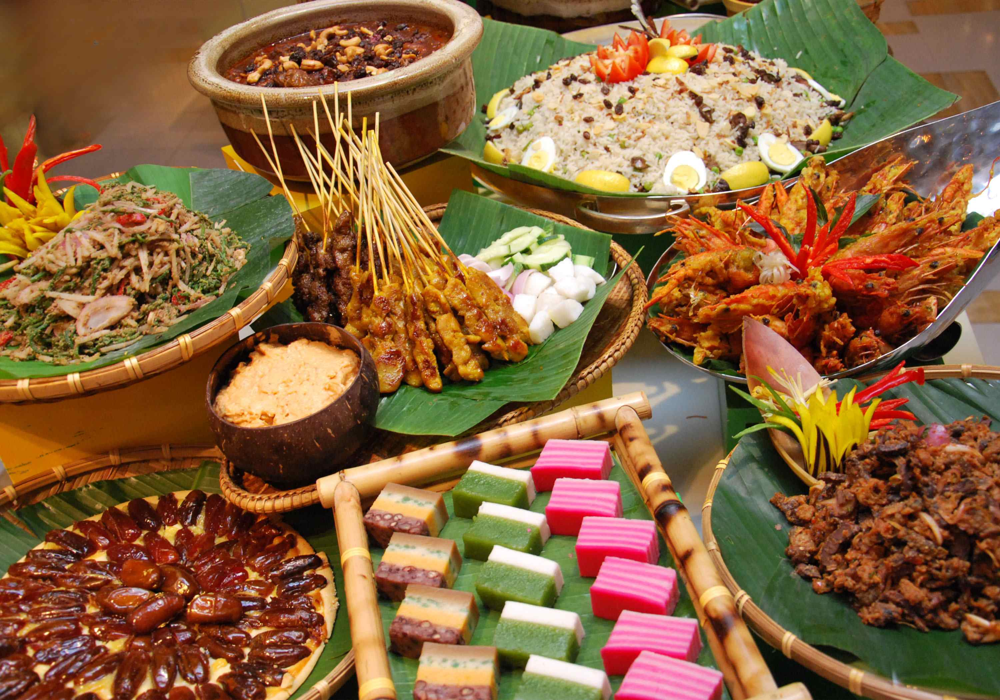

What to eat in Malaysia?
Malaysian Top Tradition
Cuisine
If there’s one thing that’s irrevocably great about Malaysia, it’s the food. With so many different cultural ethnicities in one country, people in Malaysia enjoy an unbelievably wide range of different cuisines and local flavours.
It’s thus, no wonder that Malaysia is often one of the top foodie havens in the region. While some foods are generally loved throughout the country,
each of the 13 states in Malaysia actually have their own unique dishes for which they are famous for.
To understand Malaysian food is to understand how Malaysia is made up. The country consists largely of three races: Malays, Chinese, and Indians. Imagine the array of flavors and invluences just from these three cultures. It’s difficult to pinpoint one distinct dish or flavor and call it “Malaysian”, as Malaysian cuisine is a fusion of all these cultures
Abstract
After hours of research and coming to terms with the
fact that I will be lynched either way for my choices, here’s a definitive list of the representative dishes of Malaysia’s 13 states. But before we begin,
I have a confession to make: I cheated. There were so many wonderful dishes to choose from that I couldn’t possibly only pick one for every state. So, instead,
I set aside a special mention for the dish that almost made it but fell just short. Take a look and see how many of these scrumptious culinary delights you’ve actually tasted!

Top Menu from Various Country